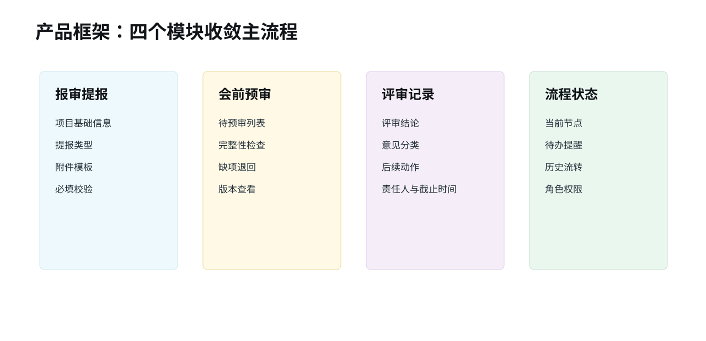
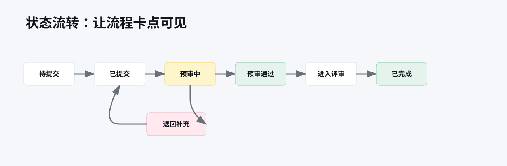

邮件、微信群、共享文件夹并行流转，提交口径不统一。
Project Case · B2B Workflow
B端审批协同平台工作流优化升级
真实 B 端平台升级项目。把原来依赖邮件、微信群和共享文件夹的方案报审流程，收敛为可提交、可预审、可追踪、可沉淀的线上协同流程。

Problem
线下材料流转导致评审协同低效
项目提交、会前预审、评审意见和后续追踪散落在线下渠道，导致口径不统一、版本难核对、责任事项难闭环。
完整性检查、缺项催补和版本核对依赖人工协调。
评审结论和后续动作散落在会议纪要和聊天记录中。
提交方、预审方、评审方和管理方对流程节点认知不一致。
Roles
按角色拆痛点，再收敛模块
| 角色 | 核心任务 | 痛点 | 平台应该解决什么 |
|---|---|---|---|
| 提交方 | 提交报审材料 | 不清楚交什么、交到什么深度 | 模板、必填项、状态反馈 |
| 预审方 | 会前完整性检查 | 反复催补、版本混乱 | 清单检查、退回补缺、版本记录 |
| 评审方 | 会前阅读和会后沉淀 | 信息不集中、意见难追踪 | 统一材料入口、结构化意见 |
| 管理方 | 查看流程和结果 | 当前卡在哪不清楚 | 流程状态、权限边界、历史记录 |
Workflow
升级后主流程
核心不是增加页面，而是把提交、预审、评审和追踪这条主流程跑通。
Modules
四个核心模块

Fields & Status
字段、状态与权限
| 字段 | 类型 | 是否必填 | 说明 |
|---|---|---|---|
| 项目名称 | 文本 | 是 | 标识报审项目 |
| 项目类型 | 单选 | 是 | 匹配材料模板 |
| 提报阶段 | 单选 | 是 | 区分评审阶段 |
| 必填附件 | 附件 | 是 | 由项目类型和阶段决定 |
| 版本号 | 文本 | 是 | 用于版本管理 |

Permissions
权限矩阵
| 角色 | 可提交 | 可预审 | 可退回 | 可记录意见 | 可查看历史 |
|---|---|---|---|---|---|
| 提交方 | 是 | 否 | 否 | 否 | 本项目 |
| 预审方 | 否 | 是 | 是 | 是 | 负责项目 |
| 评审方 | 否 | 否 | 否 | 是 | 参与项目 |
| 管理方 | 否 | 否 | 否 | 可查看 | 全部或授权范围 |
Validation
6 个关键流程场景完成验证
| 场景 | 功能可用性 | 业务适配度 | 结果判断 | 备注 |
|---|---|---|---|---|
| 报审材料提交 | 高 | 高 | 可用 | 提交口径明显更统一 |
| 会前预审 | 高 | 高 | 可用 | 收资和核对效率提升明显 |
| 评审记录沉淀 | 中 | 高 | 基本可用 | 需要习惯培养 |
| 流程状态查看 | 中 | 中 | 基本可用 | 流程透明度改善 |
| 角色权限 | 中 | 高 | 基本可用 | 权限边界更清晰 |
| 上线培训与反馈 | 高 | 高 | 可用 | 培训后使用理解度提升 |
Decisions
关键取舍
不追求大而全，优先让高频报审、预审、评审和追踪跑通。
让不同角色知道当前节点、待处理人和下一步动作。
平台负责流程和留痕，不替代评审方的专业判断。
Roadmap
后续路线
v0
现状梳理
梳理线下流程、角色痛点、材料清单和协同断点。
v1
统一提报
上线项目提报入口、必填字段、附件模板。
v2
会前预审
支持完整性检查、缺项退回、版本记录。
v3
评审沉淀
支持评审结论、意见分类、后续动作留痕。
v4
AI 辅助方向
后续可探索材料完整性检查、意见摘要和历史案例检索。